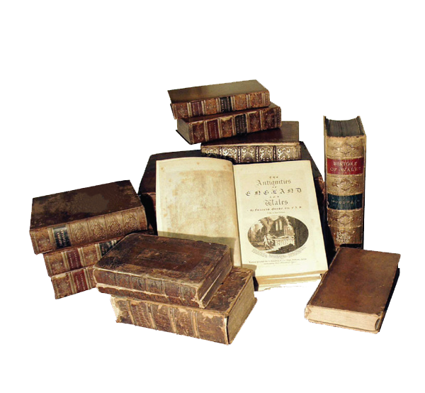
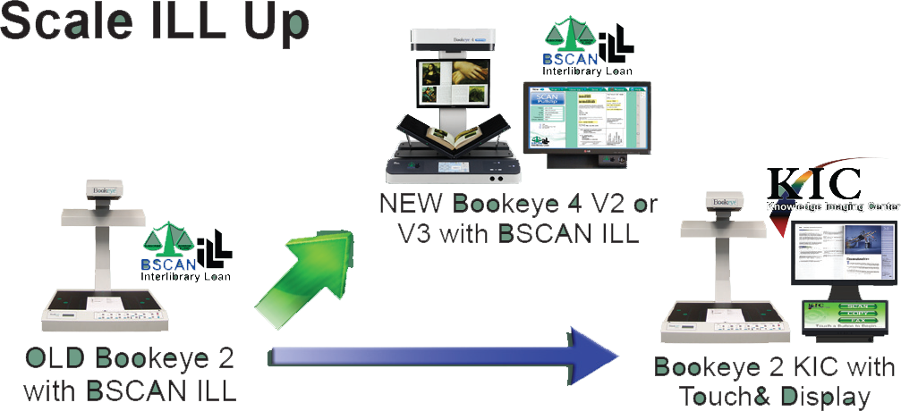
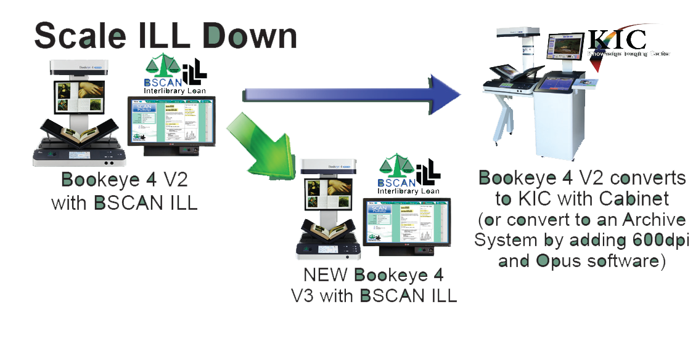
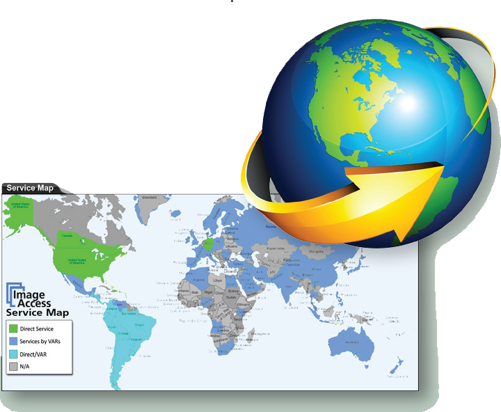
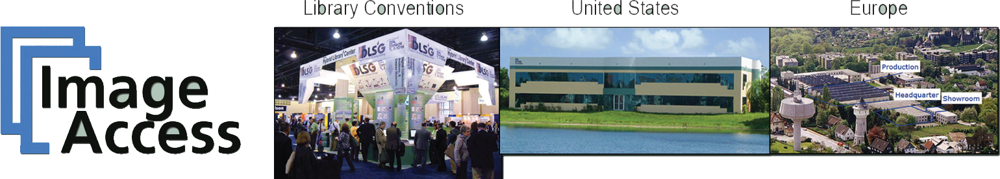

Resource Sharing
Share with Archivist & Digital Course Materials CreationThe exceptional image quality produced by Bookeye and WideTEK scanners affords opportunities for resource shar- ing with Archivists as well as use for projects and creat- ing digital course materials. Reduce your cost per article scanned by sharing equipment costs and helping other departments to switch to digital format and get color content without the additional cost of color copiers or color micro- filming.
Use some digitization projects funding to purchase the Bookeye 4 V1, V2 or V3 and dramatically reduce ILL's share of the cost of state-of-the-art scanning equipment. A complementary schedule is usually easy to agree upon. Note that while the Bookeye 4 V2's standard image quality (high quality 400dpi) meets and exceeds digitization standards, a 600dpi option can be purchased later, if desired.
The Amazing Image Quality of the Bookeye 4 V2 600dpi Option
With its 600dpi option, Bookeye 4 V2 produces the highest quality A2 size (17x25'') images of any face-up scanner todayTo capture moving objects, digital cameras must use array CCDs, which capture all parts of the object at the same instant. Afford- able digital cameras have 50 megapixels or less. And those pixels must be further divided into red, green and blue sub-pixels, which can reduce the clarity of color images by 40%.
 The Bayer Pattern is used by
digital cameras to capture color images
The Bayer Pattern is used by
digital cameras to capture color images
Since books don't move while being scanned, Bookeyes employ linear CCD technology to produce ultra-clear images with astounding 140 megapixels. Each pixel in a linear CCD includes full red, green and blue sub-pixels.
 Scanners use linear CCDs. The sweep-
ing action of scanners allow them to
capture the precise amount of red, blue
and green for each pixel.
Scanners use linear CCDs. The sweep-
ing action of scanners allow them to
capture the precise amount of red, blue
and green for each pixel.
Bookeye 4 scanners utilize a unique state-of-the-art rotating mirror system that dramatically reduces clarity loss at the corners of the image due to the limitations of lens systems. Bookeyes can also scan in V-mode or flat-mode, and they scan from left to right, allowing them to follow the curves of the book.
Resize ILL Operations with No Penalty
DLSG's exclusive trade-up, interchange and re-purpose programs are among the best reasons to choose DLSG for your institution's digitization needs  Premium Maintenance Plan
Image Access has an unmatched service and support record. It is impossible to affordably provide service personnel living in every city and town across America that are highly trained on the very special technologies needed by libraries. Instead, DLSG designs remote ser- viceability into its products and has perfected remote di- agnosis and when possible, repair.
The resulting savings allows DLSG to frequently and promptly provide loaner/swap-out equip- ment and to go on site whenever necessary to maintain and repair equipment, minimizing interruptions in service.
 Company History
Our experience in digitization of printed materials dates back to 1988 prior to its founding in 1993, when Image Access began providing digitization workflow solutions to commercial markets. Having developed its own book and wide format scanners as well as its own OCR, barcode reading and image treatment algorithms and a powerful workflow system, Image Access is well-equipped to meet both general and specialized digitization needs.
Image Access has a long history of leadership in digital technology. Image Access created Scan2Net®, the first Ethernet/HTML based scanner interface, the first self-serve book scanner kiosk, the first and only ILL scan, clean-up and delivery workflow system, the first affordable preservation quality large format planetary scanner, the first affordable duplex newspaper scanner, the first and only book scanner with both flat and v-modes, the first and only complete digitization workflow system, and more. We also have the most extensive and prestigious customer list for book scanners in the United States and many countries abroad.
Image Access created the Digital Library Systems Group (DLSG) in 2004 to focus on the special needs of academic, research and public libraries. And just as Bookeye quickly became the leading book scanner, DLSG quickly became the leading supplier of hybrid library products in America, helping the most prestigious libraries across America become Digital Age Libraries.
Image Access has, by far, the largest selection of self-serve book scanners (KIC), the only complete turnkey digitization workflow system for creating digital assets and archiving (Opus), and the only complete Interlibrary loan scanning and image treatment workflow system (BSCAN ILL). Image Access handily succeeds at its ongoing mission of providing the best image quality, the most specialized software and the broadest line of digitization products from which a library, archive or museum can choose.